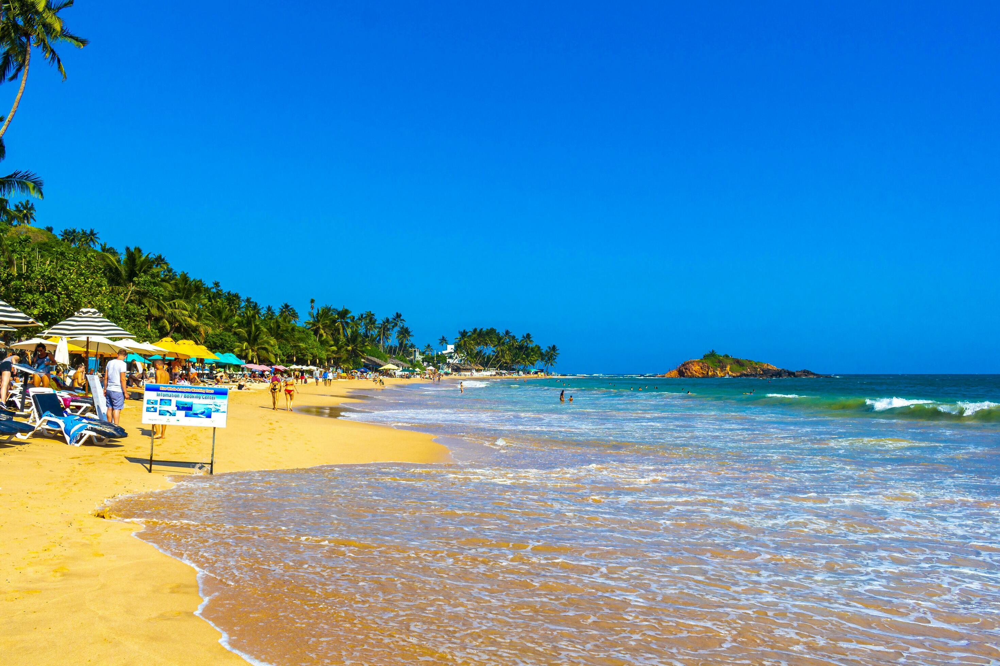

Eight world-class beaches from Hikkaduwa to Tangalle, ten clifftop sunset lookouts, live expressway directions, and curated sea-facing villas — all in a sleek glassy interface.

Golden crescent sands, coconut-fringed red headlands, and whale-watching boats setting sail at dawn.
Get real driving times via the Southern Expressway (E01), direct bus lines, and estimated taxi fares.
Train connections require a quick change at Colombo Fort Station. Below is the official Sri Lanka Railways standard coastal schedule.
| Leg | Departure Station | Arrival Station | Frequency / Train Type | Duration |
|---|---|---|---|---|
| Leg 1 (Morning) | Kandy (06:15 AM) | Colombo Fort (08:47 AM) | Local Express | ~2h 32m |
| Leg 2 (Connection) | Colombo Fort (10:30 AM) | Galle (12:49 PM) / Matara (02:21 PM) | Coastal Express Train | ~2h 19m to Galle |
| Leg 1 (Midday) | Kandy (10:40 AM) | Colombo Fort (02:04 PM) | Podi Menike Blue Train | ~3h 24m |
| Leg 2 (Connection) | Colombo Fort (02:40 PM) | Galle (04:57 PM) / Matara (06:15 PM) | Coastal Express Train | ~2h 17m to Galle |
Travel from Kandy Good Shed Bus Stand to any beach town. Take Route 01 to Colombo (Bastian Mawatha Stand), then switch to Route 02 (Galle/Matara) or Route 32 (Dikwella/Tangalle) at the same station.
| Destination Hop | Distance | By Car | By Bus | Bus Route No. | Travel Advice | Map Action |
|---|
Buses run along Galle Road (A2) every 15 minutes. Just flag them down from any roadside stop!
| Hop Route | Distance | Est. Bus Time | Approx Fare | Travel Advice |
|---|---|---|---|---|
| Hikkaduwa → Galle | 17 km | 35 – 45 min | Rs 60 (~$0.20) | Direct bus along main coastal road |
| Galle → Unawatuna | 6 km | 15 min | Rs 30 (~$0.10) | Get off at Unawatuna junction, 3-min tuk-tuk to bay |
| Unawatuna → Weligama | 20 km | 30 – 35 min | Rs 80 (~$0.25) | Scenic coastal views of Koggala stilt fishermen |
| Weligama → Mirissa | 5 km | 10 min | Rs 30 (~$0.10) | Quick hop around the headland |
| Mirissa → Dikwella / Hiriketiya | 34 km | 50 min | Rs 120 (~$0.40) | Get off at Dikwella stand for Hiriketiya tuk-tuk |
Self-catering beach houses and small luxury pool villas in quiet coves, steps from Mirissa harbour and Weligama surf break.
Search Mirissa Stays →Rooftop ocean-view apartments and jungle pool villas 3 minutes' walk from the horseshoe bay — ideal for surfers.
Search Hiriketiya Stays →Secluded, fully staffed multi-bedroom beachfront sanctuaries on turtle-nesting beaches along Tangalle's golden coast.
Search Tangalle Stays →